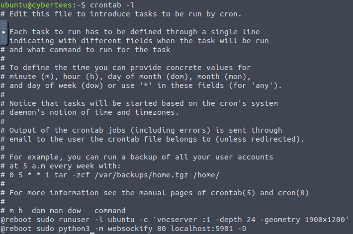
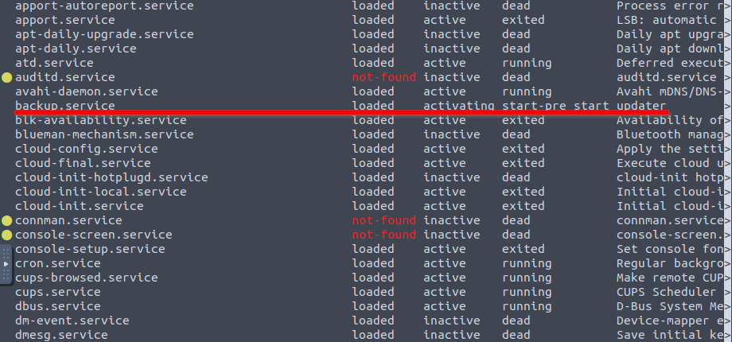
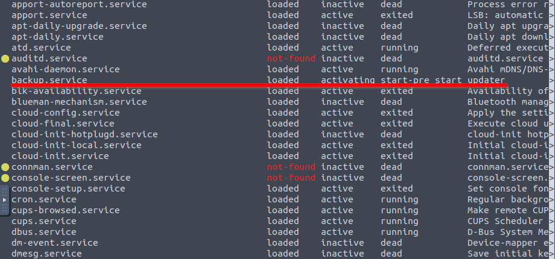

Incident Scenario
Based on the threat intel report received, an infamous hacking group, IronShade, has been observed targeting Linux servers across the region. Our team had set up a honeypot and exposed weak SSH and ports to get attacked by the APT group and understand their attack patterns.
Challenge
Investigate the server and identify the footprints left behind after the exploitation.
1 What is the Machine ID of the machine we are investigating?
Machine ID - value set during installation or boot. It uniquely identifies the host and should be considered confidential. It’s written in /etc/machine-id.

2 What backdoor user account was created on the server?
To list all accounts we can examine the /etc/passwd file.
$ cat /etc/passwd
[Output ommited...]
mircoservice:x:1001:1001:,,,:/home/mircoservice:/bin/bashThe last user in the file was mircoservice.
3 What is the cronjob that was set up by the attacker for persistence?
In order to list cronjobs we can look at /etc/crontab or use crontab -l. 
@reboot /home/mircoservice/printer_appOur job is listed on the bottom, @reboot signifies that it will be run on each reboot.
4 Examine the running processes on the machine. Can you identify the suspicious-looking hidden process from the backdoor account?
We can use ps aux, to see running process, additionally we can filter for phrase “mircoservice” using grep.
ubuntu@cybertees:~$ ps aux | grep mircoservice
root 570 0.0 0.0 2364 580 ? Ss 17:05 0:00 /home/mircoservice/.tmp/.strokes
root 876 0.0 0.0 2496 68 ? S 17:05 0:00 /home/mircoservice/printer_app
ubuntu 10294 0.0 0.0 3444 724 pts/0 S+ 17:15 0:00 grep --color=auto mircoserviceAs we can see there is one process that is hidden using the “.”, that’s .strokes.
5 How many processes are found to be running from the backdoor account’s directory?
We can use the results of the last command to answer this question, remember not to count the grep command üòÖ.
6 What is the name of the hidden file in memory from the root directory?
This can be simply done using ls -la.  There is one file - .systmd;
There is one file - .systmd;
7 What suspicious services were installed on the server? Format is service a, service b in alphabetical order.
In order to search the services we can use:
systemctl list-unit-files --type=serviceAfter some digging we can find two weird services.
 

Those are backup.service and strokes.service;
8 Examine the logs; when was the backdoor account created on this infected system?

As a reminder /var/log/auth.log is the Authorization Log and contains information about authorization mechanisms, user names and usage of sudo. I will list below what more can we see in this file:
- login attempts (successful and failed)
- data about network services
- actions that require elevated privileges
In order to filter logs we can use grep with an -a switch (because grep treats auth.log as a binary file) for the useradd command. The timestamp is the first thing we can read: Aug 5 22:05:33;
9 From which IP address were multiple SSH connections observed against the suspicious backdoor account?
As I said before auth.log will contain network services information such as SSH connections. We will again use grep and search for ssh, we can grab the first event to find the IP address: 10.11.75.247;
$ cat /var/log/auth.log | grep -a ssh
[ Output omitted... ]
Aug 13 22:16:12 cybertees sshd[2388]: PAM 2 more authentication failures; logname= uid=0 euid=0 tty=ssh ruser= rhost=10.11.75.247 user=mircoservice
[ Output omitted...]10 How many failed SSH login attempts were observed on the backdoor account?
root@cybertees:/# cat /var/log/auth.log | grep -a "ssh" | grep -a "mircoservice" | grep -a "Fail"
Aug 6 01:16:43 cybertees sshd[2256]: Failed password for mircoservice from 10.11.75.247 port 54649 ssh2
Aug 6 01:17:14 cybertees sshd[2256]: Failed password for mircoservice from 10.11.75.247 port 54649 ssh2
Aug 13 22:15:08 cybertees sshd[2385]: Failed password for mircoservice from 10.11.75.247 port 64855 ssh2
Aug 13 22:15:16 cybertees sshd[2385]: message repeated 2 times: [ Failed password for mircoservice from 10.11.75.247 port 64855 ssh2]
Aug 13 22:15:44 cybertees sshd[2388]: Failed password for mircoservice from 10.11.75.247 port 64871 ssh2
Aug 13 22:16:12 cybertees sshd[2388]: message repeated 2 times: [ Failed password for mircoservice from 10.11.75.247 port 64871 ssh2]We can chain multiple grep commands to find the proper logs. There were 8 failed SSH login attempts.
11 Which malicious package was installed on the host?

We can search for installation of packages using /var/log/dpkg.log and filter for “install” keyword using grep. One package seems out of the ordinary: pscanner.
12 What is the secret code found in the metadata of the suspicious package?
To view the details of a package we can use apt show; Our flag is written in the package’s description.